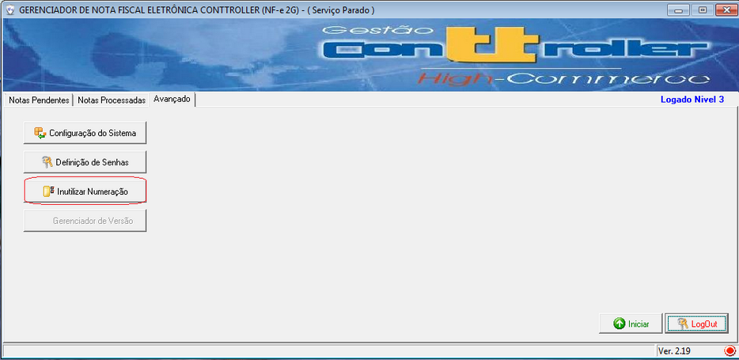
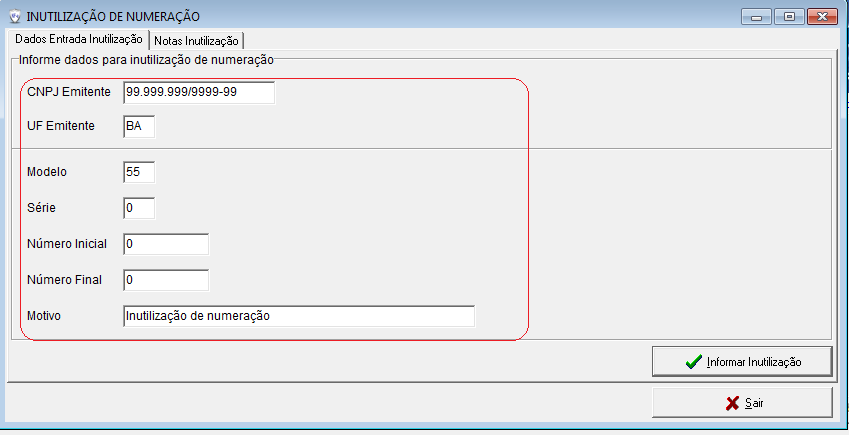
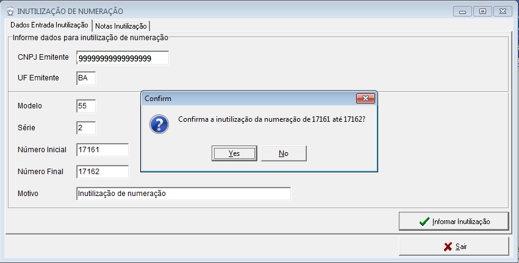
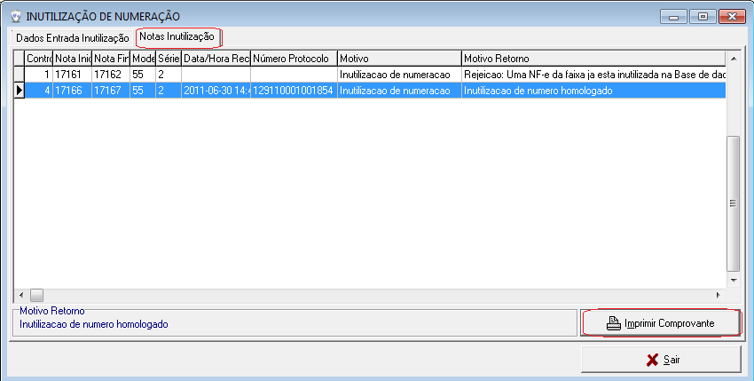
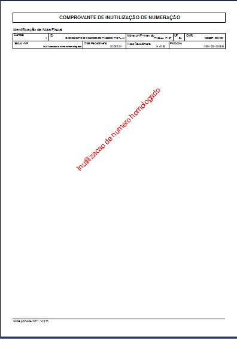
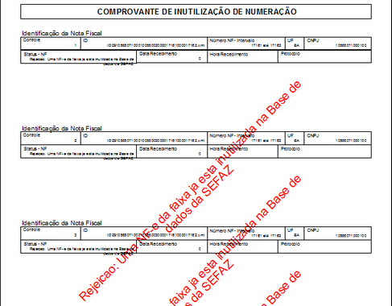

Inutilização |
  
|
Inutilização |
|
Inutilização de numeração de NF-e. (Fig.01)
Esta funcionalidade serve para inutilizar um número ou faixa de numeração de NF-e que não foi utilizada.
As causas mais comuns de não utilização de número são a quebra de sequência da numeração em razão da rejeição da NF-e ou perda de notas fiscais eletrônicas por alguma falha do ambiente de recepção ou de comunicação ou até mesmo a falha no uso de números da aplicação de faturamento.
Os informações da Inutilização de Numeração são: (Fig.02)
●Ano, ano de inutilização;
●CNPJ do emissor;
●Modelo, informar 55;
●Série, informar a série sem os zeros significativos, o zero (0) representa série única;
●UF do emissor, é muito comum os casos de falha de schema XML causados pela informação da sigla da UF neste parâmetro;
●Número inicial e final da faixa, sem os zeros significativos; informar o mesma valor para inutilizar um único número;
●Justificativa de inutilização com pelo menos 15 caracteres.
Condições de Inutilização
●O número de NF-e não pode ter sido utilizado, a providência correta para uma NF-e autorizada é o cancelamento de NF-e;
●A inutilização de faixa é limitada a 2.000 números por pedido, caso a faixa de inutilização seja superior será necessário dividir o pedido em diversos pedidos;
●Uma faixa de inutilização não pode conter números já inutilizados ou utilizados.(Fig.03)
Prazo para inutilização
Até o 10º dia do mês subsequente da quebra da numeração.
Motivos de Inutilização
Os motivos mais comuns que resultam na existência de faixas de numeração ou números de NF-e que nunca serão utilizadas são:
●falha na aplicação que salta a numeração da NF-e;
●equívoco do usuário que continua a utilizar a numeração da NF, modelo 1/1A, na NF-e;
●falha no envio ou recepção da NF-e;
Impressão Comprovante e Consulta (Fig.03)
O sistema disponibilizar uma impressão do DANFE porém somente com dados da NFe inutilizada.
Na tela de consulta é possível visualizar lista de NFe inutilizadas com numero de protocolo de autorização do SEFAZ.
Inutilizando NFe
1.Parar serviço NF-e
1.1. Clicar na aba 'Avançado'
1.2.Clicar no botão 'Inutilizar Numeração'

Fig.01
2. Preencher tela 'Dados Entrada Inutilização'

Fig.02
3. Clicar em 'Yes' para confirmar

4. Visualizar comprovante de Inutilização



Fig. 03
Os pedidos de inutilização de numeração homologados podem ser consultados no Portal Nacional.
Algumas SEFAZ também oferecem a consulta Web dos pedidos de inutilização homologados.
|